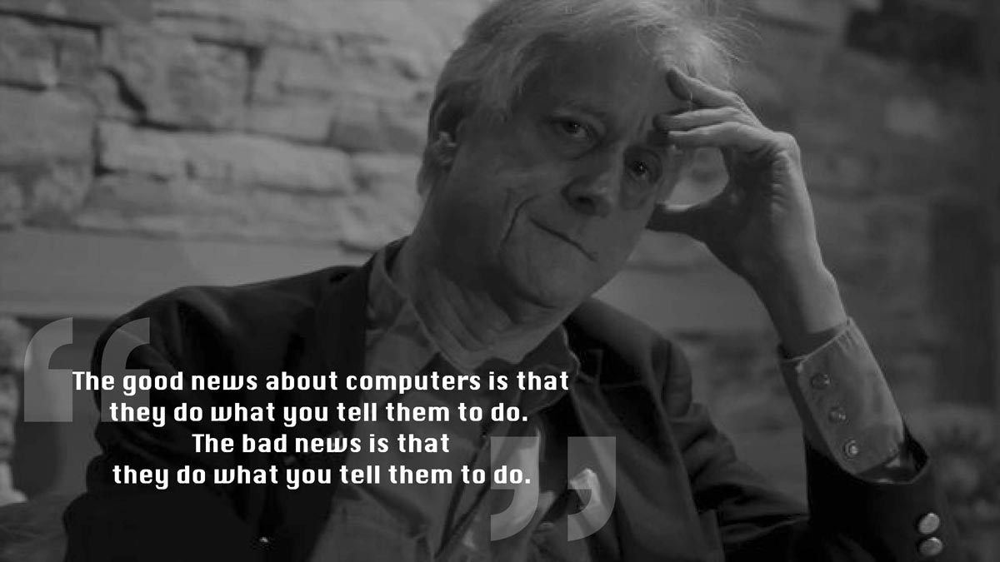

Nous sommes en 1937 à Chicago, en Amérique. Cette année, un homme en avance sur son temps vient au monde. Un homme guidé tout au long de sa vie par une idée, un fil rouge, un objectif. Comment une pensée rétro-futuriste peut avoir un impact à l’échelle du monde et se prolonger encore aujourd’hui ?
Avant d’entamer la lecture de mon article, je te pose cette question:
« Connais-tu Ted Nelson, ou en as-tu déjà entendu parler ? ».
Si tu ne le connais pas, sois attentif ! Tu es sur le point de découvrir plein de choses.
Une carriere toute tracée
Né dans une famille d’artistes, son père est acteur-réalisateur américain et par sa mère comédienne. Il étudie dans la prestigieuse école de Harvard et en sort en 1963 avec un master en sociologie ; cette branche des sciences sociale qui s’intéresse aux comportements humains en société.
Grâce à son orientation scolaire il travail sur l’information, les ordinateurs et les interfaces homme-machine avec un point de vue sociologique et philosophique. Il est considéré comme l’inventeur de terme hypertexte en 1963.
Pour le bien de tous
A l’époque il n’y a pas de CD et encore moins de clé USB pour transmettre des données. La diffusion de l’information tel qu’on la connaît aujourd’hui n’existe pas. Dans les années 70 il y a le téléphone la tv en noir et blanc puis la poste, c’est à peu près tout.
L’ensemble de ses ordinateurs qui se connectent ensemble forme un réseau. A force d’efforts la première interface de communication existe alors que l’ARPANET, l’ancêtre d’internet est toujours en préparation.
Toutefois avant d’arriver à ce résultat il passe par trois projets.
TrueLit, ZigZag et Xanadu qui est un mélange des deux premiers.
C’est un système d’information qui permet de diffuser de façon instantanée des données informatiques. Il a connu beaucoup de problème lors de sa conception et de son élaboration très lente car trop ambitieuse pour cette époque. En effet, alors que les ordinateurs écrivent encore sur des cartes perforées, lui, pense déjà à quitter ces mémoires physiques et fragiles pour les diffuser dans un réseau.
L'hyper-xanadu
Malgré tout cet investissement, le projet Xanadu est remplacé en 1990 par l’HyperText Transfer Protocole (http) que nous connaissons aujourd’hui grâce à nos navigateurs qui accède à des données placées sur serveurs via TCP(-IP).
Selon Ted Nelson, son projet n’a pas abouti car il n'a pas été compris sur un plan technique et a conduit à de nombreuses fausses impressions.
Un réseau de publication hypertexte instantané, universel, mêlant des terminaux portables et des réseaux sans fil, des textes intégraux parsemés d'hyperliens renvoyant vers d'autres textes, modifiables avec gestion des révisions, apparaissaient comme des utopies à une époque où les simples écrans d'ordinateurs à tube cathodique étaient rares
et chers.
Au fait savez-vous que depuis 1995, il se vend dans le monde plus d’ordinateurs que de télévisons.
Est-ce fini ?
Aujourd’hui Ted Nelson est professeur à Oxford en Angleterre. Il a lancé le projet “Translitérature” en 2005, une ultime révision de ce qu’on appel l’œuvre de sa vie, Xanadu.
Il a été fait « Officier des Arts et Lettres » en 2001 par le ministre Français de la Culture Catherine Tasca pour son travail sur Xanadu et l'hypermédia et a reçu le Trophée du Forum Mondial e-Démocratie,
le 28 septembre 2005.
A 77 ans Ted reste actif sur le net, il réalise de temps à autre des vidéos sur Youtube et participe à des interviews.
Les années ont passé, les technologies ont transplannées de façon fulgurante pour nous arriver en 2014 à l’aube de nouvelles façons de communiquer inédites. Comment enverrons nous nos messages dans une dizaine d’années ? Comment consulterons nous nos mails ? Et par dessus tout, qui seront ces personnes prêtes à consacrer leurs vies afin de faire avancer le monde dans la prochaine génération ? En tout cas, c’est avec des hommes comme Ted Nelson que le World Wide Web est ce qu’il est aujourd’hui !
